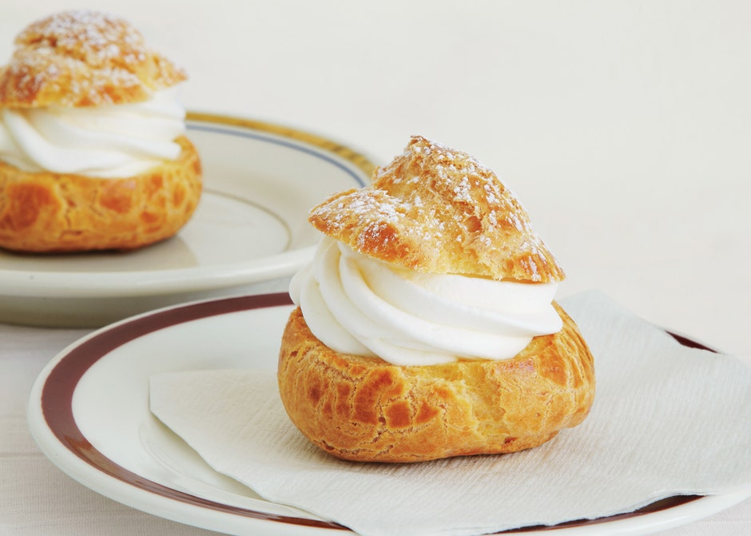

A step by step guide in making the traditional Chinese dessert usually eaten during the Mid Autumn Festival for good luck.
Step 1 Making the Dough
To prepare the dough use a large bowl, mix the golden syrup, water and oil.
Sift in the flour
Knead into a dough. Cover with film wrap and rest for 40 minutes.
Step 2 Preparing the salted egg
Mix egg yolks with wine. If the salted egg yolks are homemade and freshly broken from the shells, you’ll see the egg whites turn opaque after mixing with the wine a few minutes later.
Wipe the yolks dry with kitchen paper. Cut each into two halves. Set aside.
Step 3 Prepare the lotus paste
Roll the lotus paste into a long tube.
Cut into 12 equal portions of 35 grams.
Roll each portion into a ball shape.
Set aside and preheat the oven to 180°C.
Step 4 Assembling the Mooncake
Divide the dough into 12 equal portions. Roll each portion into a small ball shape.
Cover a dough portion with a plastic film and roll into a thin disc. Then take a lotus paste ball and poke a hole in the middle with your finger.
Place the egg yolk inside and roll and shape into a ball. Wrap and seal the lotus paste ball with the dough disc.
Spray the mooncake mould and place the stuffed mooncake into the mould. Lightly press the mould handle, then remove the mooncake from the mould. Transfer the stuffed mooncake onto a lined baking tray. Repeat this step to finish the remaining dough and lotus paste.
Step 5 Baking the Mooncake
Bake in the preheated oven for about 10 to 12 minutes. Continue to bake until the pastry turns golden brown.
Remove from oven and leave to cool on a wire rack.
Store in an air–tight container. The pastry will become soft and shiny in one or two days: the mooncake recipe is ready to be enjoyed.
Classic Cream Puff

Ingredients
2 (3.5 ounce)packages instant vanilla pudding mix
2 cups heavy cream
1 cup milk
1/2 cup butter
1 cup water
1/4 teaspoon salt
1 cup all-purpose flour
4 eggs
A classic French dessert filled with sweet cream and dusted with powdered sugar.
Step 1 Mix together vanilla instant pudding mix, cream and milk. Cover and refrigerate to set.
Step 2 Preheat oven to 425 degrees F (220 degrees C).
Step 3 In a large pot, bring water and butter to a rolling boil. Stir in flour and salt until the mixture forms a ball. Transfer the dough to a large mixing bowl. Using a wooden spoon or stand mixer, beat in the eggs one at a time, mixing well after each. Drop by tablespoonfuls onto an ungreased baking sheet.
Step 4 Bake for 20 to 25 minutes in the preheated oven, until golden brown. Centers should be dry.
Step 5 When the shells are cool, either split and fill them with the pudding mixture, or use a pastry bag to pipe the pudding into the shells.
Check out this video to learn how you can add a twist to this classic pastry!